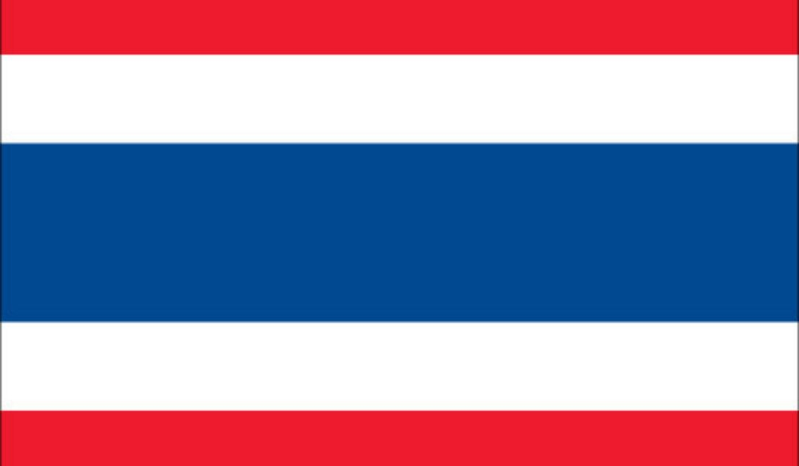
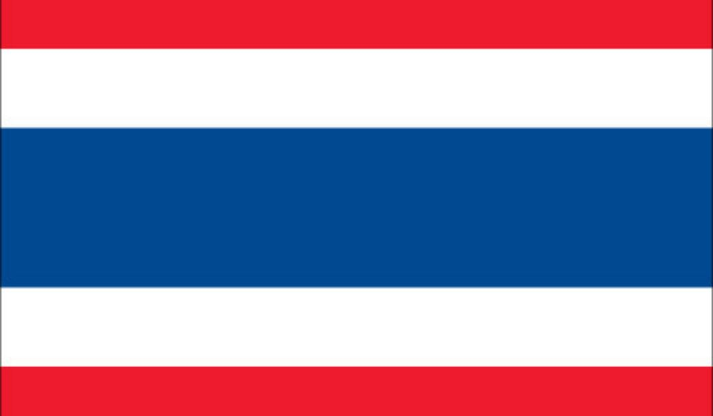
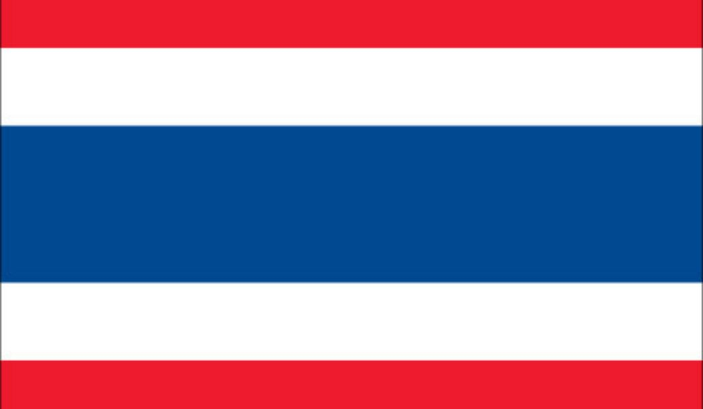

Verkefni 4 Mobile up

About Thailand

Best Provinces
Bangkok
Bangkok, Thailand’s capital, is a large city known for ornate shrines and vibrant street life. The boat-filled Chao Phraya River feeds its network of canals, flowing past the Rattanakosin royal district, home to opulent Grand Palace and its sacred Wat Phra Kaew Temple. Nearby is Wat Pho Temple with an enormous reclining Buddha and, on the opposite shore, Wat Arun Temple with its steep steps and Khmer-style spire.
Phuket
Phuket, a rainforested, mountainous island in the Andaman Sea, has some of Thailand’s most popular beaches, mainly situated along the clear waters of the western shore. The island is home to many high-end seaside resorts, spas and restaurants. Phuket City, the capital, has old shophouses and busy markets. Patong, the main resort town, has many nightclubs, bars and discos.

Krabi
Krabi, on southern Thailand’s west coast, is a province characterized by craggy, sheer limestone cliffs, dense mangrove forests, and more than a hundred offshore islands. Some of its most popular beach destinations include the Phi Phi Islands, which jut from the sea like giant rainforested boulders, and Railay Beach, accessible only by boat and a prominent rock-climbing spot.

Chiang Mai
Chiang Mai is a city in mountainous northern Thailand. Founded in 1296, it was capital of the independent Lanna Kingdom until 1558. Its Old City area still retains vestiges of walls and moats from its history as a cultural and religious center. It’s also home to hundreds of elaborate Buddhist temples, including 14th-century Wat Phra Singh and 15th-century Wat Chedi Luang, adorned with carved serpents.

Ayutthaya
Ayutthaya is a city in Thailand, about 80 kilometers north of Bangkok. It was capital of the Kingdom of Siam, and a prosperous international trading port, from 1350 until razed by the Burmese in 1767. The ruins of the old city now form the Ayutthaya Historical Park, an archaeological site that contains palaces, Buddhist temples, monasteries and statues. The park is on an island between 3 rivers.
Sukhothai
Sukhothai is a province in central Thailand, around 400 km north of Bangkok. The modern town of new Sukhothai is the capital of the province. The Sukhothai Historical Park, 12 km west of new Sukhothai, contains the partially restored 13th- and 14th-century palaces and temples of the Kingdom of Siam’s first capital within its walls. This classic ‘Sukhothai style’ of architecture left Thailand a lasting legacy.
Mae Hong Son
DescriptionMae Hong Son is a remote, mountainous province in northern Thailand, bordering Myanmar (Burma). Though sparsely populated, it's ethnically diverse and home to hill tribes such as the Shan and Hmong. The capital, also called Mae Hong Son, is a gateway to the region's hills. It's overlooked by Wat Phrathat Doi Kongmu, a Burmese-style monastery with 2 ornate white chedis (stupas) built in the 19th century.

Nakhon Ratchasima
Nakhon Ratchasima is one of the four major cities of Isan, Thailand, known as the "big four of Isan". The city is commonly known as Korat, a shortened form of its name. It is the governmental seat of the Nakhon Ratchasima Province and Mueang Nakhon Ratchasima District.